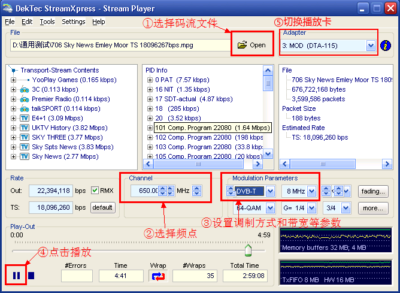
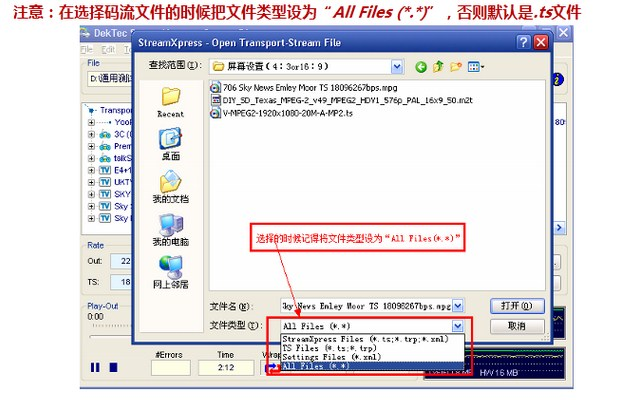
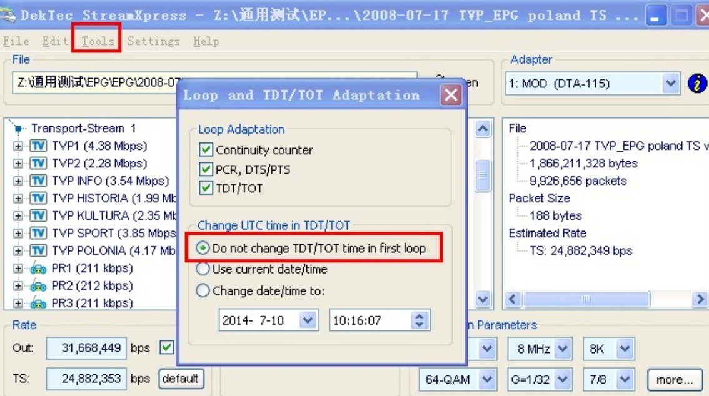
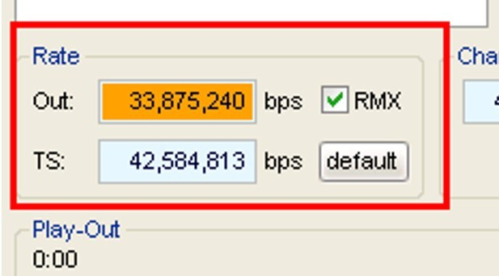
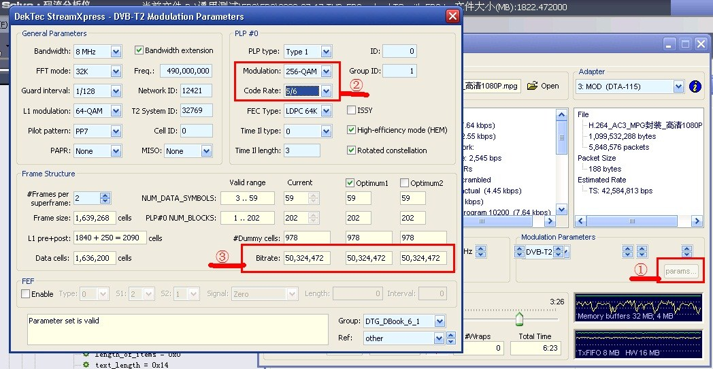
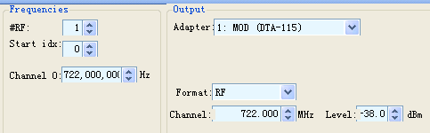
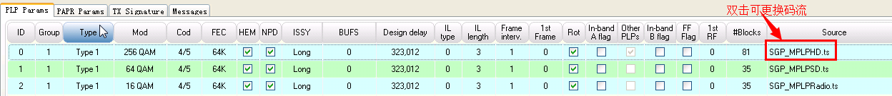
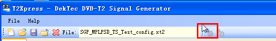
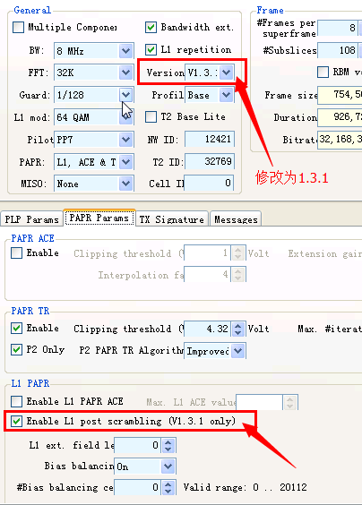
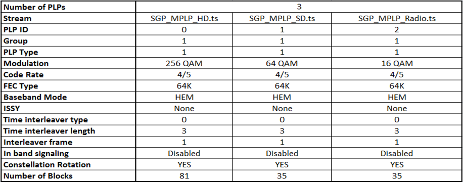

本文集收集了数字网络事业部内部测试相关资料，包括内部测试用例、测试环境说明以及测试方法说明等
当前海外软件研发共有223、224、225、226共4台服务器安装有播放卡，其中226播放器仅安装了一张全频段全制式的播放卡，225播放器有一张DTMB播放卡。
具体情况请看下表：
| 播放器 | IP | 播放卡 | 播放卡说明 |
| 223播放器 | 10.118.4.223 | DVB-T/T2 | 可播放DVB-C，DVB-T，DVB-T2，ISDB-T，QAM-B、QAM-C、ATSC和DVB-H |
| DVB-S/S2 | 可播放DVB-S，DVB-S2 | ||
| 224播放器 | 10.118.4.224 | DVB-T | 可播放DVB-C，DVB-T，ISDB-T，QAM-B、QAM-C、ATSC、DVB-H。不能播放DVB_T2 |
| DVB-S/S2 | 可播放DVB-S，DVB-S2 | ||
| 225播放器 | 10.118.4.225 | DMB-T/H | 可播放DVB-C， QAM-B，QAM-C，DVB-T、DVB-T2、ADTB-T、ATSC和DMB-T/H等 |
| DVB-S/S2 | 可播放DVB-S，DVB-S2 | ||
| 226播放器 | 10.118.4.226 | DVB-C/T/S | 可播放DVB-C，DVB-T/T2，DVB-S/S2 |
去预订播放卡： 预订播放卡
有线电视信号
| 频点 | 免费频道 | 说明 |
| 259 MHz | CCTV 1 | 主频点,共6个频道 |
| 427 MHz | 天威HD | |
| 435 MHz | 天威TVG |
| 频点 | 免费频道 | 说明 |
| 275 MHz | 广东卫视 | 共6个频道 |
| 506 MHz | 深圳卫视 | 共6个频道 |
| 459 MHz | 深圳MG |
地面电视信号
卫星电视信号
| 亚洲7号（3S） 查看该卫星资料 | |||
| LNB: 5150 | DiSEqC: A | 22K: OFF | LNB Power: ON |
| 频点 | 说明 | ||
| 4125 H 27500 | HD Phx Chinese、HD Phx Infonews、HD Phx HK | ||
| 3760 H 26000 | DW(Deutsch)、DW、TV5 | ||
| 3721 H 8167 | XING KONG、Channel [v] | ||
| 亚太5号（138） 查看该卫星资料 | |||
| LNB: 11300 | DiSEqC: A | 22K: ON | LNB Power: ON |
| 频点 | 说明 | ||
| 12538 V 41250 | CCTV 4、BEIJING、SHANGHAI、SHENZHEN | ||
| 12690 H 43200 | MNB | ||
本节内容适用于完全不会使用的同事，如果已经是老手，就不要浪费时间了
1. 以播放-T为例，双击“StreamXpress”
2. 选择需要播放的码流文件，设置播放频点、调制方式等参数；⑤可以切换播放卡
3. 播放器默认选择的文件格式是.ts，如果找不到需要的码流是因为格式为.mpg或其他，将“文件类型”改为“All Files(*.*)”即可

播放卡播放的频率：FreqPlayer = 1150
机顶盒设置的LNB：LNB = 5150
机顶盒设置的频率：FreqSTB = LNB - FreqPlayer = 5150-1150 = 4000MHz
播放卡播放的频率：FreqPlayer = 1804
机顶盒设置的LNB：LNB = 9750
机顶盒设置的频率：FreqSTB = LNB - FreqPlayer = 9750+1804 = 11554MHz
分析: 考虑码流播放器关于时间的设置可能有误。
解决: 在菜单栏中找到“Tools->Loop And TDT/TOT Adaptation”，选择“Do not change TDT/TOT time in first loop”。可点击下图参考。

解决: 借鉴上面的设置，我们可以先选择一个时间段预定/预录，如13:00。 然后将码流播放器中“Tools->Loop And TDT/TOT Adaptation”，选择“Do not change TDT/TOT time in first loop”直接设置为12:58，然后等待2分钟即可。
考虑码流播放器开启了两个相同频点的播放器，检查服务器的码流播放器，看看是否开了两个相同频点的播放卡。
分析: 分析其码流，主要原因是码流的原始码率比播放器实际输出的要高（见下图红框内，TS为码流码率，Out为实际输出码率），导致丢失数据。 
解决: 在参数设置中，Modulation设为更高，Code Rate也设置为更高。（目的就是使Out的码率高于原始TS流中的码率）

考虑码流播放器开启了两个相同频点的播放器，检查服务器的码流播放器，看看是否开了两个相同频点的播放卡。
T2Xpress支持播放DVB-T2制式的码流，可以在同一频点下播放多个码流，每个码流占用一个独立的通道。在新加坡项目中，有此功能的测试用例。
安装的时候，XP系统首先需要安装framework；第一次使用，如果不知道应该如何配置参数，可以直接打开参数文件(.xt2)，同样在上述地址下的config文件中可以找到。
频点设置：两个频点要相同

码流替换：选择的码流位置最好不要有中文路径名

开始播放：当下方状态栏显示“Parameter set is valid”时，可以点击菜单的按钮开始播放码流。

Enable/disabled L1 post scrambling：这个和DVB-T2版本有关，需要在General面板中设置Version为V1.3.1，才能在PAPR Params选项卡中勾选EnableL1 post scrambling

其他参数设置：参照新加坡项目的测试用例（ISSY不能为None，暂时不知道如何解决）

查阅相关文档：DisEqc和22K
查阅相关文档：DisEqc和22K
查阅相关文档：马达Motor
查阅相关文档：数字音频
（暂无资料）
附件：详细测试申请表
附件：送样测试申请表
示例：内部详细测试用例_V1.0 | 附件
示例：送样测试用例_V1.0 | 附件
示例：算通CA内部测试用例_V1.0 | 附件 | 帮助
| # | 发布日期 | 版本 | 更新内容 | 作者 | 审核 |
| 1 | 2014年06月23日 | V1.0 | 根据平时测试内容整理；一部服务器资料由杨军裕提供 | 林晓州 | —— |
| 2 | 2014年07月01日 | V1.1 | 因更换服务器，修改服务器的播放卡 | 林晓州 | —— |
| 3 | 2014年07月04日 | V1.2 | 因再次更换服务器，修改服务器的播放卡 | 林晓州 | —— |
| 4 | 2014年07月04日 | V1.3 | 增加目录 | 林晓州 | 郑嘉惠、周厚秋、周宇锋 |
| 5 | 2014年07月10日 | V1.4 | 增加T2Xpress播放软件使用说明 | 林晓州 | 郑嘉惠 |
| 6 | 2014年08月05日 | V1.5 | 增加服务器使用登记说明 | 林晓州 | —— |
| 7 | 2015年11月23日 | V2.0 | 转入网站管理，整合了测试相关的所有资料 | 林晓州 | —— |
OneLib智库 · 分享知识和经验，打造精品个人智库平台
Designed By 林晓州
qq： 1139904786
邮箱： 1139904786@qq.com
网址： http://www.onelib.biz
©2015 · OneLib智库